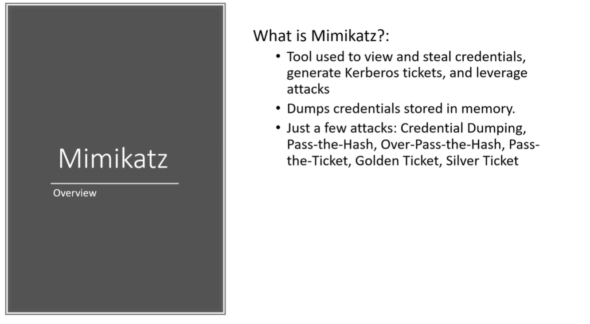

Mimikatz: https://github.com/gentilkiwi/mimikatz
Can use IEX (Invoke Expressions) is a way to just download files via a powershell and download and execute without ever actually touching disk.
or also could use obfuscate to hide that we are running mimikatz
